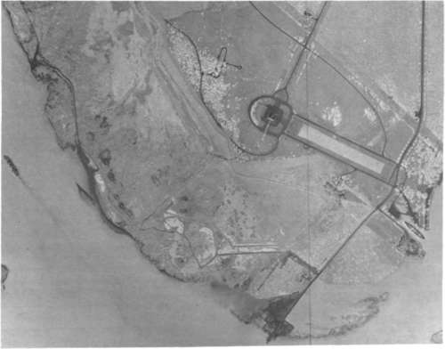
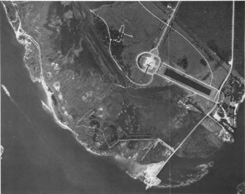

Films For Aerial Cameras
Description
This section is from the book "Aerial Cameras, Aerial Films, And Film Processing", by Richard W. Underwood.
Films For Aerial Cameras
Most of the world's leading film manufacturers produce films especially created for aerial survey photography. At the Manned Spacecraft Center, practically all films used in the Earth Resources Survey Program are manufactured by the Eastman Kodak Company. Although NASA has many good reasons for this choice of manufacturer, each user must make his own decisions based on his particular situation and other factors outlined in this paper.
In theory, almost any film could be used for airborne photography. As a practical matter, however, films not specially designed for aerial photography may yield undesirable and erratic results and therefore should not be considered.
Aerial films are usually formulated to be relatively insensitive to the blue portion of the electromagnetic spectrum and slightly more sensitive to the red portion. The reason for this is that atmospheric haze—both natural and manmade—is usually blue. The film is thus relatively insensitive to its major problem, haze. Aerial films can be purchased in several thicknesses, in many widths and lengths, and on several types of base material. For geometrically accurate work, films on a polyester material are best. They exhibit very little residual shrinkage or expansion due to handling in the camera and processing. In fact, polyester or equivalent films have image dimensional stability approaching that of glass plates. They are desirable but not necessary if your goal is not precise measurements.
Aerial films are manufactured with many levels of sensitivity to various intensities of light. This is usually referred to as the speed of a film. Fast films, being very sensitive to light, are usually used where the subject is poorly illuminated or when very short exposure times are necessary. Slow films are usually preferred for well illuminated subjects when highest resolution is a requirement. The camera is usually the limiting factor, and films are selected on the basis of subject illumination and camera capabilities.
Aerial films have varied contrast capabilities. A high-contrast film is advantageous when a subject is of low contrast, and vice versa. Low contrast is usually produced by either a hazy atmospheric condition, a very high altitude, or a very homogeneous subject. Conversely, a low-contrast film should give better results in low-altitude photography of a subject with high contrast. Many users prefer to manipulate contrast in the processing laboratory. Experience is the best guide to which technique will produce the best results in your own situation.
A good starting point would be with a fine-grain, medium-speed, polyester-base film such as Kodak Plus-X Aerographic Type 2402. For work in the infrared portion of the spectrum (to reduce haze effects, locate water or wet ground, or conduct forest surveys) and for multispectral photography, a film such as Kodak Infrared Aerographic Type 2424 should be considered.
When one reaches such a degree of sophistication in aerial photography that he feels ready to undertake color aerial photography, an entirely new dimension opens up. But it presents many problems. Probably the major decision will be whether to use color positive or color negative film. Both are readily available, and both have certain advantages as well as disadvantages (figures 11 and 12). One must consider the cost of the original material against its utility value, as well as the cost of reproduction.
My own experience indicates that you should consider color positive (i.e., color reversal materials) until both the photographic laboratory and user-geoscientists have developed the required skills of the trade. Color positive or color reversal materials have trade names that usually end in "chrome", such as Kodachrome, Ektachrome, Agfachrome, Anscochrome, and Fujichrome. The original film, when processed properly, yields a true and correct color viewing positive. The laboratory technician can use the original as a guide for his reproductions, and the geoscientist has a true spectral reproduction of the original scene.
Figure 11. Aerial color photo (negative) of San Jacinto State Park, Texas (difficult to interpret).
Figure 12. Color positive of photo shown in figure 11 (much more easily interpreted).
Color negative films can be useless for interpretation (except for a few very skilled individuals), but they are somewhat easier to reproduce (that is, once the laboratory is skilled enough to insure true reproduction of the original scene). These films have trade names which usually end in "color", such as Kodacolor, Anscocolor, Agfacolor, etc. Eastman Kodak makes a large variety of excellent color positive and color negative aerial films. GAF Corporation and Agfa also make aerial color films which are in worldwide use.
For specialized work, you should be aware of such films as Kodak Aerochrome Infrared Type 2443, a film of especially great value in agricultural and geologic studies. Also, GAF has produced a two-color Anscochrome which is used in specialized océanographie survey work. The user should survey the entire market and know the characteristics of all available films.
You will find that color films, like black-and-white films, require considerable experimentation before one is selected. Your research program will be a continuing one. Your photographic scientists will be required to test all the new and improved films being manufactured and the final selection must be based on whichever film best accomplishes your specific tasks.
Continue to: